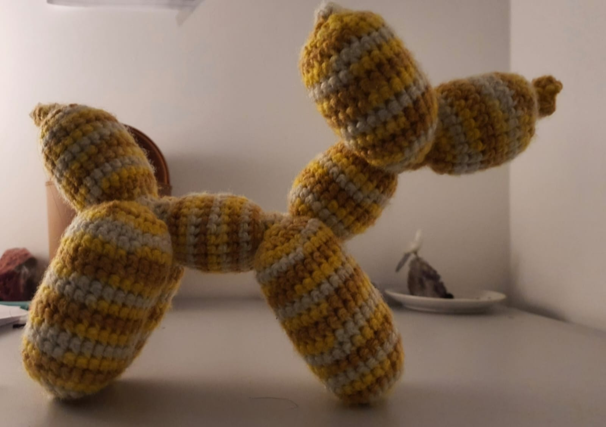
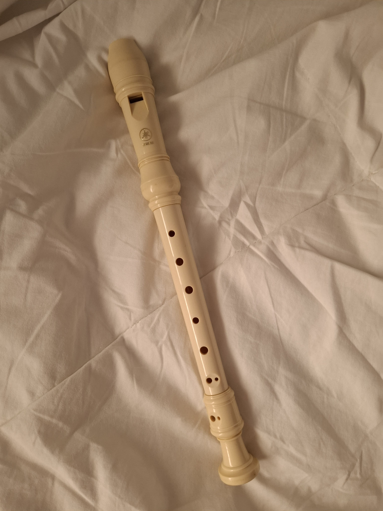
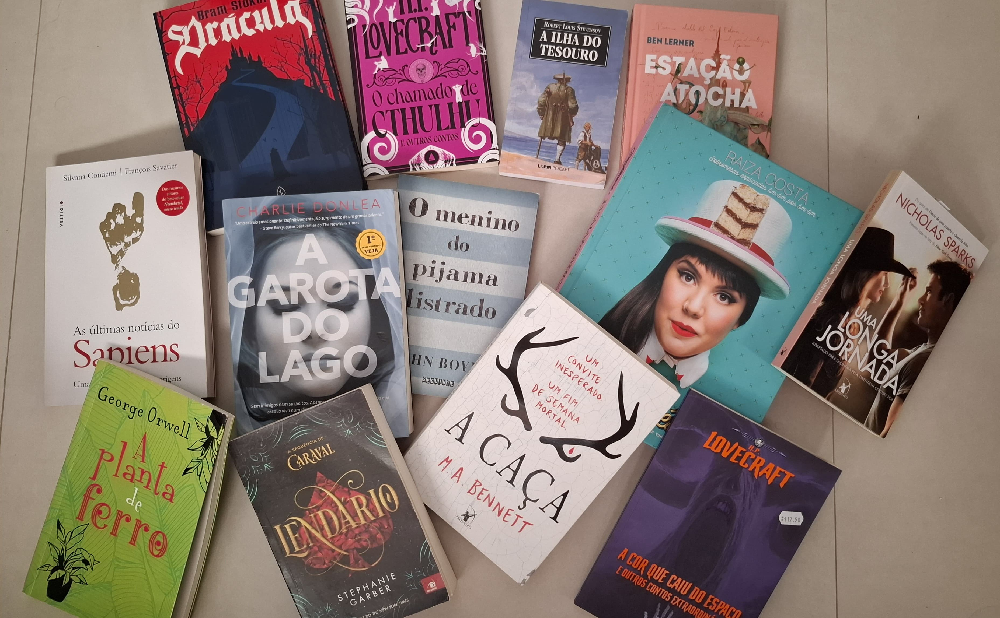
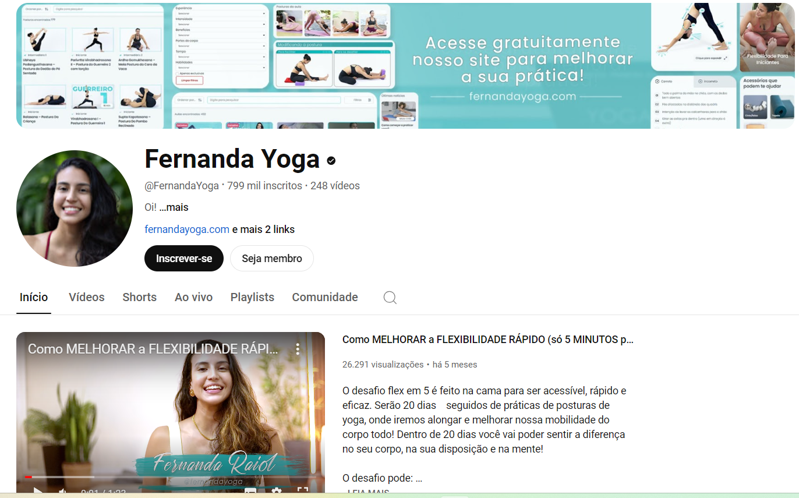
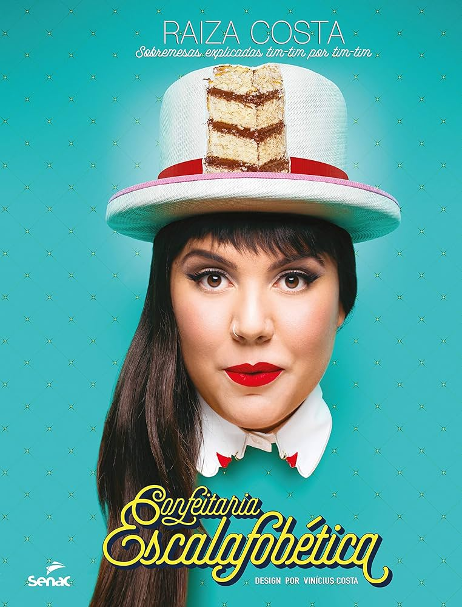
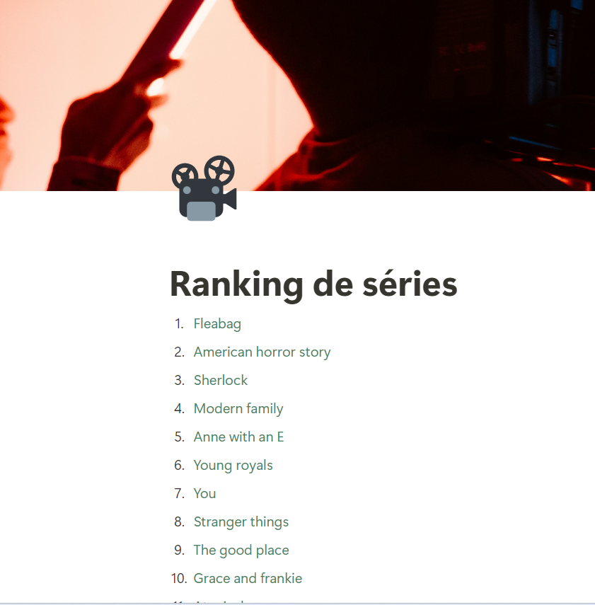
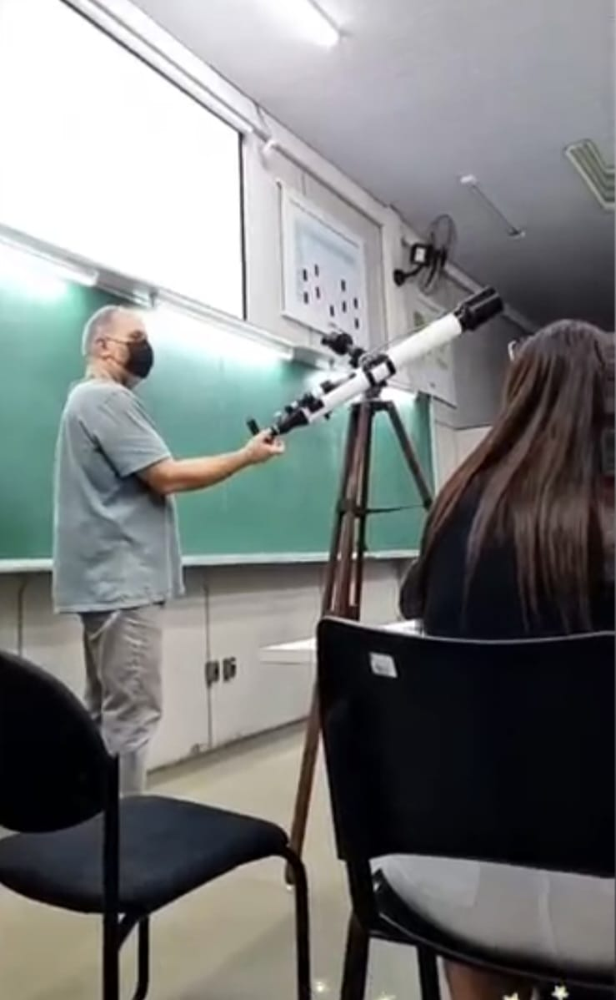
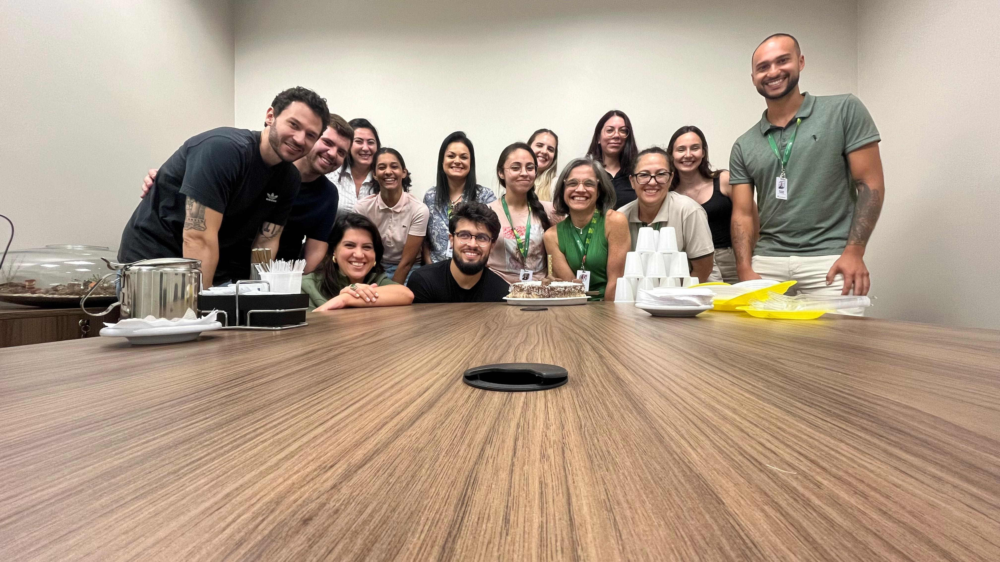

Minha coleção de criações

CROCHÊ
Desde criança, sempre me interessei em aprender coisas novas. Nisso, minha mãe viu potencial em me ensinar crochê, algo que ela já dominava. Depois de muita prática, acabei pegando gosto pele coisa, e comecei a fazer peças de roupa e amigurumis (como o da foto). O crochê, além de ser um passatempo, também tem grande valor afetivo para mim, e pretendo passar meu conhecimento para frente, se tiver a oportunidade.
FLAUTA
Meu interesse em música me fez começar a aprender alguns instrumentos, e um deles foi a flauta! Levo este hobby apenas como diversão, portanto não possuo tanto conhecimento no assunto, apesar de gostar bastante. Geralmente toco flauta quando estou me sentindo estressada e preciso relaxar, pois, quando estou tocando, a flauta é minha única preocupação, além do controle da respiração, algo muito importante quando se toca instrumentos de sopro.


LIVROS
Meus pais se esforçaram para que eu desenvolvesse o hábito da leitura desde pequena, me dando livros de presente e me mostrando a diversidade de assuntos que possuíam em seu conteúdo. Dessa maneira, ler é um dos meus passatempos há muito tempo, e, mesmo enquanto consumo livros de ficção/fantasia, sinto que estou fazendo algo produtivo, já que minha escrita consequentemente melhora enquanto leio e faço um aproveitamento de momentos como os de transporte, por exemplo. A foto ao lado mostra alguns livros de minha coleção.
YOGA
Durante a pandemia, situações de ansiedade e estresse começaram a ser frequentes em minha vida, e encontrei no Yoga uma escapatória para isso. Através de vídeo aulas, comecei a fazer esta prática em minha casa, e percebi o quão bem o Yoga me fazia. Depois de um tempo, comecei a influenciar meus amigos a praticarem também.
Apesar de não estar tão ativa no Yoga ultimamente, pretendo voltar e evoluir ainda mais, pois é algo que melhorava muito meu dia. A foto ao lado mostra o canal da minha criadora de conteúdo de yoga preferida: "Fernanda Yoga".


COZINHA
Durante minha infância, fui criada majoritariamente pela minha avó, que, assim como a maioria das avós, adora cozinhar para os netos. Como passava a maior parte do tempo com ela, desenvolvi interesse pela cozinha, e em como suas criações maravilhosas eram feitas. Após alguns anos, realmente comecei a me interessar pelo estudo atrás de alguns pratos, por exemplo: como a fermentação natural dos pães funciona, como equilibrar uma sobremesa, etc.
Alguns de meus criadores de conteúdo de culinária preferidos são: Mohamad Hindi, Raiza Costa (autora do livro ao lado, que considero uma obra de arte), Rene Seifert (do canal “Pão da Casa”) e Adriano Ribeiro (do canal “Amo pão caseiro”). Cozinhar definitivamente é uma das minhas paixões, e concluir uma receita com excelência não tem preço para mim.
SÉRIES
Também durante a pandemia, desenvolvi um novo hobby: assistir e fazer um ranking de séries. Devido à quantidade excessiva de tempo livre que eu, e a maioria dos adolescentes da minha idade na época possuíamos, assistir séries se tornou o maior refúgio contra o tédio para mim. A grande vantagem disso é que melhorei meu inglês absurdamente, pois assistia todos os episódios de forma legendada, e que tenho um bom repertório para iniciar uma conversa com alguém que também goste do assunto.


CLUBE DE ASTRONOMIA
Nos últimos anos de meu ensino médio, o professor de física, chamado Elton, percebeu um grande interesse em suas turmas por astronomia, assunto que o mesmo dominava e possuía grande paixão. Com isso, desenvolveu um clube de astronomia, que se passava às sextas-feiras à noite. Neste clube, o professor dava uma breve introdução teórica sobre o que iríamos ver, e nos levava à parte aberta do colégio, para que observássemos os astros através de sua luneta ou telescópio.
O clube fazia com que tivéssemos contato com pessoas de todas as turmas, além da observação por instrumentos que não são de fácil acesso.
Sou muito grata por ter tido esta oportunidade, ainda participaria do clube se existisse, mas, infelizmente, por questões de saúde, o professor teve que se retirar do colégio, mas todos que tiveram contato com ele ainda demonstram gratidão e muito carinho por ele.
MEU TRABALHO ATUAL
Em março de 2024, tive a oportunidade de iniciar meu primeiro trabalho formal no City Center Outlet Premium, em Campo Largo. Atualmente atuo no setor de RH, como jovem aprendiz.
Apesar de não pretender seguir nessa área, sou grata pelo meu trabalho, pois me ensinou muitas coisas na prática, por exemplo: como me portar em um ambiente formal, manter a boa comunicação e convivência com os colegas, etc. Além disso, gosto muito da equipe na qual trabalho, todos foram muito receptivos comigo, e fizeram questão de me ajudar no que eu precisasse.
